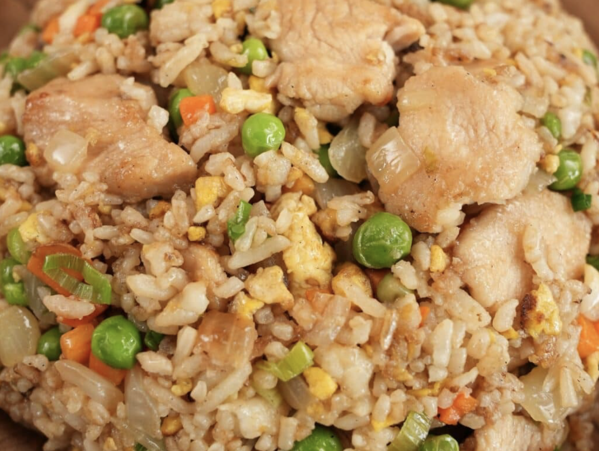

Chicken Fried Rice

Description
This chicken fried rice recipe is very easy and tasty! It's basically cooked chicken,
rice, soy sauce, and shredded egg stir-fried together. For best results, use leftover
cooked rice.
Ingredients
- 1 large egg
- 1 tablespoon water
- 1 tablespoon butter
- 1 tablespoon vegetable oil
- 1 onion, chopped
- 2 cups cooked white rice, cold
- 1 cup cooked, chopped chicken meat
- 2 tablespoons soy sauce
- 1 teaspoon ground black pepper
Steps
- Gather all ingredients.
- Beat egg and water together in small bowl. Melt butter in a large skillet or wok over medium-low heat
- add egg and cook without stirring, 1 to 2 minutes.
- Remove egg from skillet and cut into shreds; set aside.
- Heat oil in the same skillet. Add onion; cook and stir until soft, about 3 minutes.
- Stir in rice, chicken, soy sauce, and pepper. Cook and stir for about 5 minutes
- Stir in shredded egg. Serve hot.